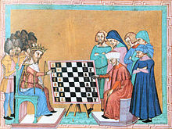

Há um consenso entre os historiadores de que a Índia é o mais provável berço do esporte. A principal diferença entre o jogo atual e seu antecessor ficava por conta da limitação de movimento das peças. O atual bispo era conhecido como elefante, enquanto a dama, peça mais poderosa do xadrez moderno, era conhecida como vizir.
Mas foi na França, no século XVIII, que eventos de xadrez — já no formato que conhecemos atualmente — passaram a ganhar repercussão. Os mestres da época se enfrentavam em partidas épicas, cujo palco eram as coffee houses, casas de café e chá distribuídas pelas maiores cidades europeias. No século seguinte, os clubes de xadrez tiveram um rápido desenvolvimento e partidas por correspondência entre cidades tornaram-se comuns. Jornais passaram a destacar o jogo e publicações foram feitas contendo ideias avançadas dos mais célebres enxadristas da época.